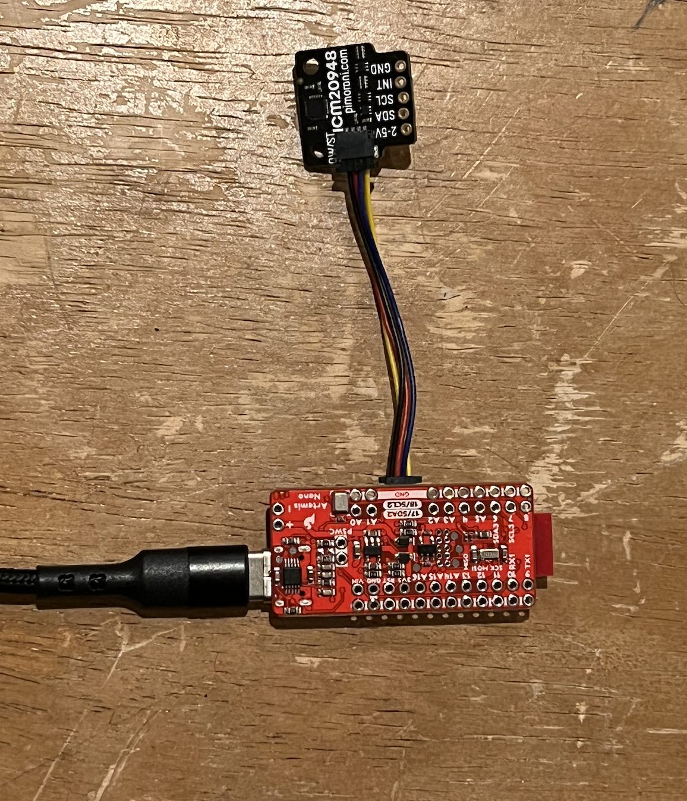
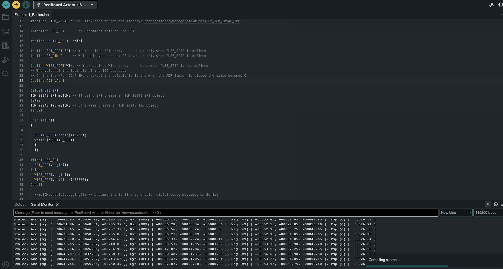

The focus of lab 2 was to use an IMU to calculate the roll, pitch, and yaw of the robot we will be building. The lab consisted of reading IMU data, modifying it to remove noise, and testing the controls of the RC car.
The goal of this section was to setup up the IMU and read the acceleration and gyroscope data. The IMU uses small, spring like mechanism to calculate the x, y, and z acceleration as well as angular acceleration.
To set up the IMU, the ADO_VAL, representing the last bit of the I2C address, first had to be changed from 1 to 0. This is required if the connection in the back of teh IMU is soldered.
Using the accelerometer data, the roll and pitch were calculated. Applying the inverse tangent to the acceleration in x and y with respect to z, gives the roll and pitch.
Although the resulting for roll and pitch data is relatively accurate, it contains some noise. The noise only exists in specific frequencies, so it is possibly to remove it through a fourier decomposition and a low pass filter. Using python, the pitch and roll data was analysed and the frequencies mainly populated by noise were identified. However, due to the internal low pass filter in the IMU, very little high frequency noise is present in the readings.
To capture the yaw of the IMU and refine the readings, it is necessary to use the gyroscope. Similar to the accelerometer, the gyrsocope uses a spring mass system to calculate the rotational acceleration of the IMU. However, using the gyrsocope to calculate pitch, roll, and yaw creates drift in the readings because the gyroscope integrates over time. Bellow is a comparison of pitch calculated on a gyroscope and an accelerometer.
Using a complementary filter, the gyroscopic readings can be combined with the readings from the accelerometer to give more precise measurements.
Alpha was calculated to be 0.1. This allows for smoother and more responsive measurements.
Eliminating any print statements and optimizing the code, the sampling rate for the pitch, roll, and yaw measurements was determined to be 20Hz or 0.05s per measurement.
During this lab, the RC cars were fully charged and became operational. Upon testing, the cars showed relatively easy maneuverability, and very fast acceleration. The acceleration easily allowed the car to do flips. This video is my first attempt at a trick, and all future videos will build on this start.